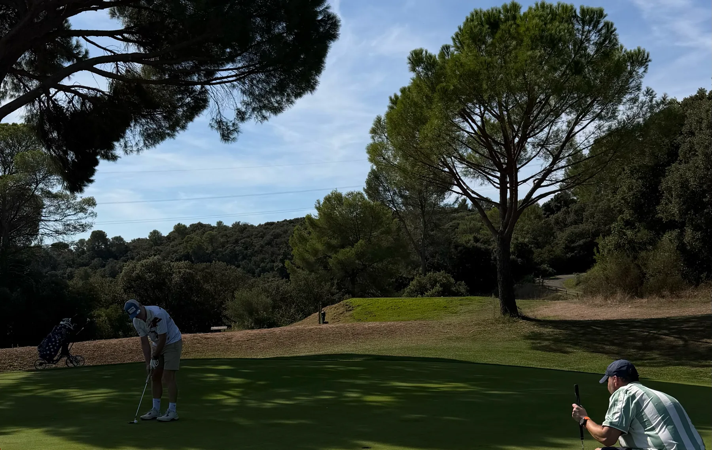
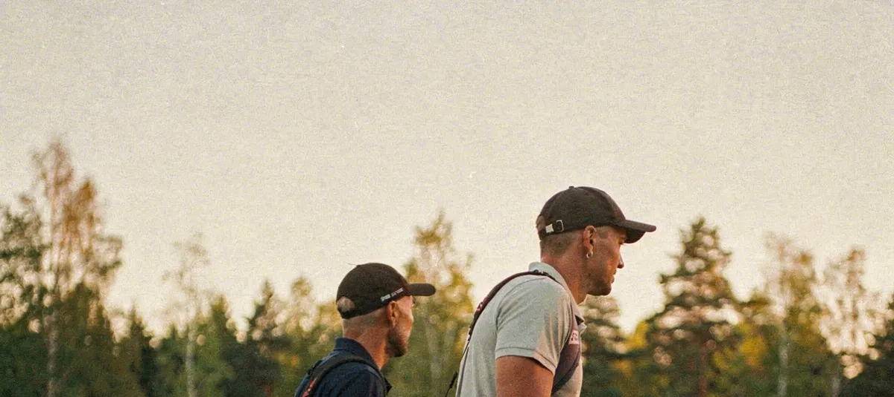

Greensome er en spilleform for hold på to: I slår begge ud, vælger det bedste udslag, og den, hvis udslag ikke blev valgt, slår næste slag. Derefter skiftes I til at slå, til bolden er i hul.

Hvordan spilles greensome?
- Begge slår ud. I slår hver jeres udslag fra teestedet.
- Vælg det bedste udslag. I vælger det udslag, der ligger bedst, og samler den anden bold op.
- Den anden slår næste slag. Den, hvis udslag ikke blev valgt, slår andetslaget.
- Skift, til bolden er i hul. Derefter skiftes I til at slå til den samme bold. Holdet har én score pr. hul.
Hvad er forskellen på greensome og foursome?
I foursome slår kun én af jer ud på hvert hul, og I skiftes til det. I greensome slår I begge ud og vælger det bedste. Resten af hullet er det samme: I skiftes til at slå til én bold.
Læs mere i Hvad er foursome i golf?.
Hvordan regnes handicap i greensome?
Dansk Golf Union anbefaler, at holdet får 60 procent af det laveste spillehandicap plus 40 procent af det højeste. Har I spillehandicap 10 og 20, giver det 6 plus 8, altså 14 slag til holdet.
Det er en anbefaling. Spiller I en turnering, står det i turneringens betingelser.
Tæller greensome til handicap?
Nej. I Danmark skal en tællende runde være individuel, og i greensome skiftes I til at slå til den samme bold.
Hvilke spilleformer kan vi spille i Golfsocial?
I dag stableford og slagspil. Appen regner med hver spillers handicap og viser stillingen, når I har tastet scoren.
Runden kommer bagefter i feedet, hvor vennerne kan se den og skrive en kommentar.

Spørgsmål og svar
Hvad er greensome?
En spilleform for hold på to, hvor I begge slår ud, vælger det bedste udslag og derefter skiftes til at slå til den samme bold.
Hvordan spilles greensome i golf?
Begge slår ud. Holdet vælger det bedste udslag, og den, hvis udslag ikke blev valgt, slår næste slag. Derefter skiftes I, til bolden er i hul.
Hvem slår andetslaget i greensome?
Den spiller, hvis udslag ikke blev valgt.
Hvordan regnes handicap i greensome?
Dansk Golf Union anbefaler 60 procent af det laveste spillehandicap plus 40 procent af det højeste. Med 10 og 20 får holdet 14 slag.
Hvad er forskellen på greensome og foursome?
I greensome slår begge ud, og I vælger det bedste udslag. I foursome slår kun én ud på hvert hul, og I skiftes til det.
Tæller greensome til handicap?
Nej. I Danmark skal en tællende runde være individuel.
Golfsocial-appen
Dit golfhjem
Registrér dine runder til dit DGU-handicap, følg din udvikling, og se vennernes runder i feedet. Gratis at spille med vennerne, på iPhone og Android.
